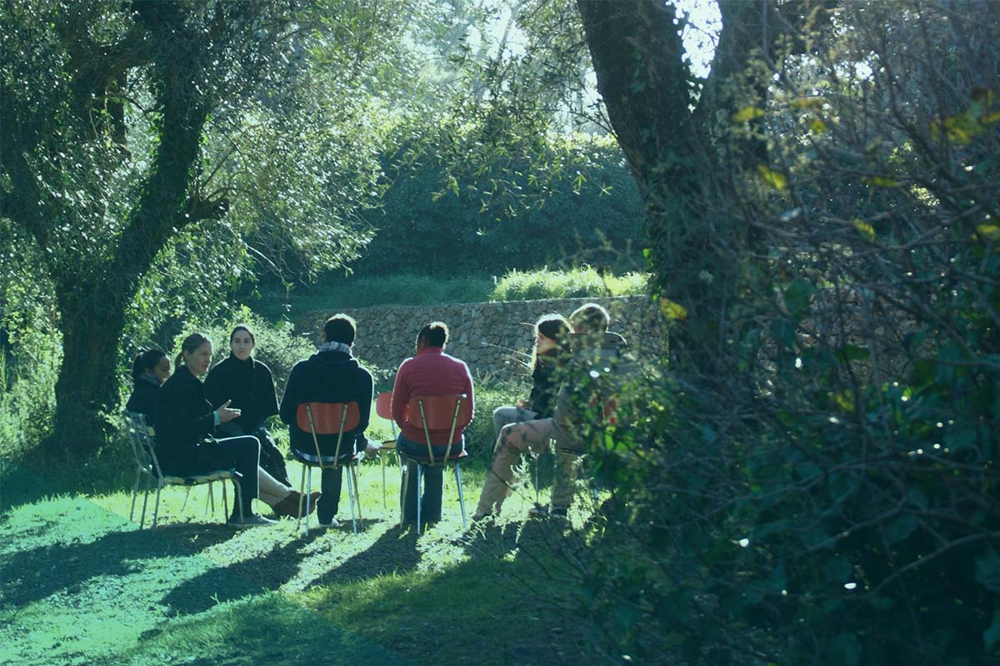

WE ARE KOTTER.
Change Management
+ Strategy Execution.
Reimagined.
The evidence is overwhelming. The world is facing change that is no
longer episodic but constant. Kotter knows how to turn change and
uncertainty into opportunity… because it’s all we do. We can help
you harness the power of your people to achieve unimaginable
results at unprecedented speed.